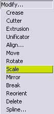
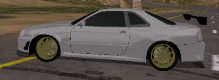

Step 12: Fixing the 3D Mesh
Is your 3D Mesh having problems? Is it too big or small? Well, it's high time we fix that, right?
OK, Open ALL your meshes back into ZModeler, this includes the dashboard, the wheel, the 3D brake lights (if applicable), and the needle!
Select them all with the square selector, and go to Modify... Scale

Hold Shift, and drag the mouse to scale up or down, depending on your needs!
Once you think you got it, export your meshes, but KEEP ZModeler OPEN!!!
Pack the car and go test drive.
Almost got it, now I just have to move the car a bit back and scale down a little.

Keep doing this until the model lines up perfectly!
Once you are lined up to move on, you can move ONWARD.